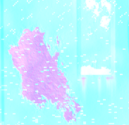
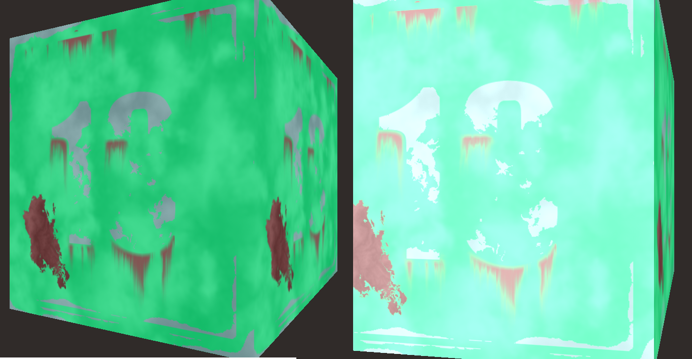
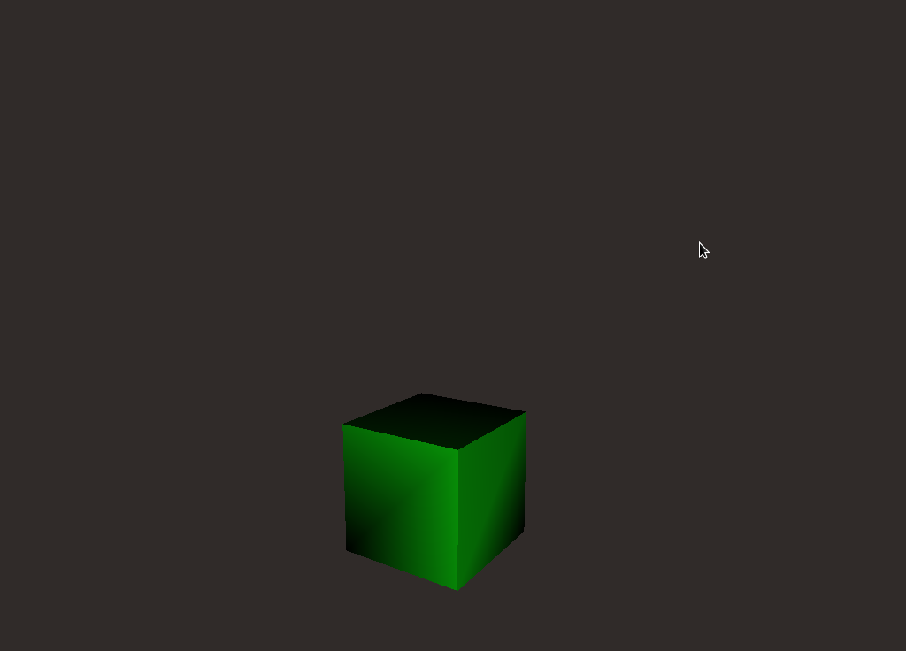
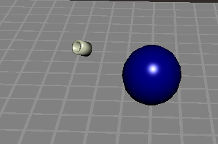

I did not use menus in project 2, but the in-class presentations convinced me that I needed to start project 3 with menus. As with much of the documentation I encountered in the course of this project, I found the documentation for GLUT menus to be a little on the rustic side. Google led me to a decent, albeit Windows-centric, tutorial from Lighthouse 3D.
The obj module made things very easy here. Using it, and code from
our lecture slides, creating sampler uniforms was a non-issue. In order to understand
better what the library was doing, I read a little about .mtl here:
MTL Files Material Definitions for OBJ Files.
Immediately after working out the obj module, I had a nice Thirteen Box
dresed in its diffuse texture. Adding the specular sampler and some
lighting calculations borrowed from our first lectures on shader lighting
gave me what looked like specular behavior, but without the specular
texture mapping demonstrated in class...
Early attempts to tweak those calculations resulted in static:
dc9d31ca0

Believing I had gotten the shininess looking fairly good, I need to turn attention to the
lighting, then the normal map -notice that there's still a pretty serious problem
in that the shininess only works when we are looking straight at the box...thinking
that another light will help that.

glBindTexture calls from the main application does not
stop them from appearing which led me to see that the obj module is doing this as
part of its create methods.At this point in my progress, I became convinced that getting the light correct was the best way forward, and my dedication to this position consumed most of the 40 hours I spent in the last week...trying to figure it out...
To make a spotlight, it looks like there are a range of options, the most attractive of which is to enable the built-in lights as spotlights. However, while I have not found it explicitly stated anywhere, calls like the following seem to be fixed-function specific. glEnable(GL_LIGHTING); glEnable(GL_LIGHT0); Shader based lighting computes light color and intensity on a per-vertex or per-fragment basis (or both), and does not require the previously mentioned function calls (commenting them out seems to have no effect). * Using user-defined light source coordinates:
We could use the OpenGL lighting state and reference that state within our vertex shader, but to illustrate the use of uniform variables, we define the light source position as a uniform variable like this: -Orange Book 157 in search of a better understanding of non-fixed function lighting, I have run the brick shader from the Orange Book (155-167) using my own mechanism for determining the location of the light (in main application). Setting the position according to mouse coordinates is working, but the coordinates are in the wrong coordinate space... Still looking...multiplying the mouse coordinates by
gl_ModelViewProjectionMatrixInverseTransposeis yielding weird results:
 The trick is to treat your light as any other object. -[http://labs.pieterdedecker.be/blog/defining-a-fixed-light-source-in-opengl/][http://labs.pieterdedecker.be/blog/defining-a-fixed-light-source-in-opengl/] ....many hours later, some careful review of transformation and of the glut motion and mouse callback functions has led me to a functional spotlight object that can orbit in step with the mouse.221a466 
several hours later, my modelview matrices are seeming incorrect. double m[16]; glGetDoublev(GL_MODELVIEW, m);
printf("anchor coord %d is {%f,%f,%f,%f}\n", S->num_verts-1, S->obj_anchor[0], S->obj_anchor[1], S->obj_anchor[2], S->obj_anchor[3]);
S->mv_location[0] = S->obj_anchor[0]*m[0] + S->obj_anchor[1]*m[4] + S->obj_anchor[2]* m[8] + S->obj_anchor[3] *m[12];
S->mv_location[1] = S->obj_anchor[0]*m[1] + S->obj_anchor[1]*m[5] + S->obj_anchor[2]* m[9] + S->obj_anchor[3] *m[13];
S->mv_location[2] = S->obj_anchor[0]*m[2] + S->obj_anchor[1]*m[6] + S->obj_anchor[2]* m[10] + S->obj_anchor[3] *m[14];
S->mv_location[3] = S->obj_anchor[0]*m[3] + S->obj_anchor[1]*m[7] + S->obj_anchor[2]* m[11] + S->obj_anchor[3] *m[15];
int i=0;
for(i;i<16;i++)
{
printf("value of m[%d]=%f\n", i, m[i]);
}
printf("the coordinate of vector TRANSFORMED is {%f,%f,%f,%f}\n", S->mv_location[0], S->mv_location[1], S->mv_location[2], S->mv_location[3]);
running this lets me see the values being multiplied, and to my disappointment,
m[14] and m[15] are nan while other values are astronomically high...
passing uniform lightPos: x: 16009741167.406668 y: -0.001083 z: -nan
anchor coord 63 is {0.582255,0.241178,-0.637333,0.000000}
value of m[0]=-0.000000
value of m[1]=0.000000
value of m[2]=0.002734
value of m[3]=-0.000000
value of m[4]=66381455640.562408
value of m[5]=0.002734
value of m[6]=0.000000
value of m[7]=66379799483.187408
value of m[8]=0.000000
value of m[9]=0.002734
value of m[10]=0.000000
value of m[11]=-0.000000
value of m[12]=0.000000
value of m[13]=0.000000
value of m[14]=-nan
value of m[15]=-nan
the coordinate of vector TRANSFORMED is {16009741167.406668,-0.001083,-nan,-nan}
gluUnProject is given by the author
of a page at Neon Helium. gluUnProject
to derive coordinates from mouse (x,y) screen coordinatesdx and dy values are accumulating as they should,
however the source of the light is oscillating very quickly, evident on the shape
of the spotlight object itself.dx/dy based vector by the GL_MODELVIEW_MATRIX
before sending it to the shaders.